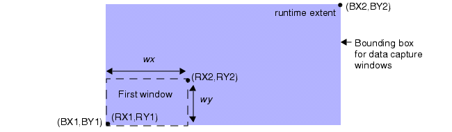

Density
Layer operation
Constructs a derived polygon layer by measuring the density of an input layer within a user-specified window over a specified region of the design.
Usage
DENSITY layer1 [layerN …] [‘[’density_expression ‘]’] constraint
[WINDOW {wxy | wx wy} [STEP {sxy | sx sy}]]
[TRUNCATE | BACKUP | IGNORE | WRAP]
[INSIDE OF EXTENT | INSIDE OF x1 y1 x2 y2 |
{ INSIDE OF LAYER layerB [ {BY EXTENT [size_value]} | BY POLYGON
| {BY RECTANGLE [EXTENDED]} | CENTERED value] }
]
[ {GRADIENT constraint [RELATIVE | ABSOLUTE] [CORNER [value]]}
| {MAGNITUDE constraint [RELATIVE | ABSOLUTE]}]
[CENTERS value]
[PRINT [ONLY] filename]
[RDB [ONLY] filename [MAG value]
[{MAXIMUM value} | {COMBINE constraint [RELATIVE | ABSOLUTE]}] ]
Arguments
- layer1
A required argument that specifies the name of an original or derived polygon layer. Multiple original or derived polygon layers can be specified.
- ‘[’density_expression‘]’
An optional argument specifying an expression enclosed in brackets that performs a calculation involving layer data. The value (based in user units) of the density_expression is computed within each data capture window. If the value of the expression satisfies the constraint, then the window is output as usual.
Default behavior: If no density_expression is provided, then the density is calculated as the ratio of the area of the input layers in a data capture window to the area of the data capture window itself.
The density_expression may involve numbers (including numeric variables), operators, parentheses ( ), and the functions given in the following table:
Table 1. Density Math Functions Function
Definition
AREA(input_layer)
Area of input_layer in user units of length squared. AREA() gives the area of the data capture window.
SQRT(x)
Square root of x
EXP(x)
Exponential (base e) of x
LOG(x)
Natural logarithm of x
SIN(x)
Sine of x radians
COS(x)
Cosine of x radians
TAN(x)
Tangent of x radians
MIN(expression1,expression2)
Returns the lesser value of the two expressions. The expressions must be of the same form as the primary Density density_expression, without the brackets.
MAX(expression1,expression2)
Returns the maximum value of the two expressions. The expressions must be of the same form as the primary Density density_expression, without the brackets.
In Table 1, x is a numeric argument (including numeric variables and other numeric-valued expressions). There is no compile-time or runtime exception checking on the arguments of these functions, and unreasonable or undefined values may result from certain arguments.
The expression must not result in strictly negative values because such values cannot be checked by a constraint. Division by zero is defined not to satisfy any constraint.
Parentheses have the highest precedence for the calculation of numeric values and may be used for grouping of terms.
Operators — Unary operators (+, -, !, ~) require only one numerical argument and all such operators have the same precedence. The unary + and - operators are the usual positive and negative signs. The other unary operators do the following:
! operator — Returns 0 (or false) if its argument is non-zero and 1 (or true) if its argument is 0.
~ operator — Returns 0 (or false) if the argument is positive and 1 (or true) if the argument is non-positive.
The ! and ~ operators treat the argument x as zero if x <= 1E‑8.
The following table shows some useful combinations of the ~ and ! operators.
Table 2. ! and ~ Operator Combinations x
!(x)
!!(x)
!(x-1)
!!(x-1)
~(x)
~~(x)
~(x-1)
~~(x-1)
3
0
1
0
1
0
1
0
1
2
0
1
0
1
0
1
0
1
1
0
1
1
0
0
1
1
0
0
1
0
0
1
1
0
1
0
-1
0
1
0
1
1
0
1
0
-2
0
1
0
1
1
0
1
0
-3
0
1
0
1
1
0
1
0
Here is a summary of interpretations of the ! and ~ operators:
!(x)
detects whether something is absent (here, 0 means absent).
!!(x)
detects whether something is present (not 0 means present).
!(x-r)
detects the value r.
!!(x-r)
detects everything except r.
~(x)
detects whether something is absent (here, x <= 0 means absent).
~~(x)
detects whether something is present (x > 0 means present).
~(x-r)
detects everything <= r.
~~(x-r)
detects everything > r.
Table 2 does not show these relations explicitly, but they can be verified from the table:
!~(x) = ~~(x) and ~!(x) = !!(x).
The binary operators ^, *, /, +, - require two numerical arguments. The ^ operator is the same as the C language pow( ) function, where x ^ y means x raised to the y power. The *, /, +, and - operators are multiplication, division, addition, and subtraction, respectively, and have the customary precedence. The ^ operator has the same precedence as * and /.
The binary operators || (OR) and && (AND) are the same as the C language operators of the same type, except that they have the same precedence as binary + and -. They expect numeric-valued inputs. For example:
AREA(via) && AREA(met) returns 1 if both inputs are non-zero and 0 otherwise.
AREA(via) || AREA(met) returns 1 if either input is non-zero and 0 otherwise.
Here is an example of a Density operation using a density_expression:
DENSITY L1 L2 L3 [ ( AREA(L1) + AREA(L2) + AREA(L3) ) / AREA() ] ...This is equivalent to the default density calculation used without a density_expression.
- constraint
A required argument specifying a constraint listed in the “Constraint Notation” column of Table 1 in the “Constraints” topic. The constraint “< 0” is not allowed.
Data capture windows whose density_expression values meet the constraint are output. The default expression (the density ratio of the window) is used if a density_expression is not specified.
When used without a density_expression, the constraint should contain numbers between 0 and 1. A percentage constraint should be divided by 100; for example, 20% is entered as 0.20.
- WINDOW {wxy | wx wy}
An optional keyword set that specifies the dimensions of the data capture window within which the density check is to occur. The choices are:
WINDOW wxy — Specifies a square window with a height and width of wxy user units. The argument wxy must evaluate to a positive real number.
WINDOW wx wy — Specifies a rectangular window with a height of wy user units and a width of wx user units. The arguments wx and wy must evaluate to positive real numbers.
The windows are tiled across a data capture extent, which is determined by the keywords specified with the operation. Windows that meet the constraint are output. Windows that are written to the DRC Results Database are merged.
Default behavior — If you do not specify this keyword set in the statement, the default window size is either the extent of the layout database read in at runtime, or is defined by the INSIDE OF condition when one is specified. Calibre does not read in database layers if they are not required for calculating outputs during the run. If the window is larger than the boundary in the x-direction or y-direction, the behavior is determined by the TRUNCATE, BACKUP, IGNORE, or WRAP keyword, with TRUNCATE being the default.
Figure 1. Density WINDOW- STEP {sxy | sx sy}
An optional keyword set that is specified with WINDOW. Specifies the grid increment for which data capture windows are tiled within the data capture extent. The choices are:
STEP sxy — Specifies that the windows are tiled to the right and up in increments of sxy user units. The argument sxy must evaluate to a positive real number.
STEP sx sy — Specifies that the windows are tiled incrementally to the right sx user units and up sy user units. The arguments sx and sy must evaluate to a positive real numbers.
The values sxy, sx, and sy must evenly divide into the WINDOW values wxy, wx, and wy, respectively.
Default behavior — If you do not specify STEP in the statement, the default STEP size is defined by the WINDOW dimensions.
Note that STEP 3 -1 is interpreted as STEP 2, and STEP 3 (-1) is a compiler error.
Figure 2. Density WINDOW STEPThe stepped data capture windows start in the lower-left corner of the data capture extent and initially are tiled in sxy or sx increments to the right. Upon arriving at the right edge of the data capture extent, the capture windows are tiled upward by the sxy or sy increment and are tiled again starting from the left edge of the data capture extent.
- TRUNCATE | BACKUP | IGNORE | WRAP
An optional keyword choice specifying the conditions applied to the data capture windows at the boundaries of the data capture extent. The algorithms for these keywords are discussed in the section “Functional Details”. TRUNCATE is the default behavior if you do not specify a keyword from this group.
TRUNCATE — Specifies that data capture windows are truncated at their capture extent. The output of the operation is then based upon the dimensions of the truncated window.
Figure 3. Density WINDOW TRUNCATEBACKUP — Specifies that if a window overlaps the right-hand or top edges of the data capture extent, the window is shifted left or down until it is no longer overlapping the data capture extent. The output of the operation is calculated after the window has been shifted.
Figure 4. Density WINDOW BACKUPIGNORE — Specifies that if a window overlaps the right-hand or top edges of the data capture extent, then the window is ignored and no data for that window location is output.
Figure 5. Density WINDOW IGNORE
- WRAP
An optional keyword that specifies if a window overlaps the right-hand or top edges of the data capture extent, then the data capture extent and its data are duplicated and added to the right-hand side or top side of the original bounding box. The output of the operation is calculated in the window that intersects the duplicated data capture extent regions.
Figure 6. Density WINDOW WRAP- INSIDE OF EXTENT | INSIDE OF x1 y1 x2 y2 | {INSIDE OF LAYER layerB [ {BY EXTENT [size_value]} | BY POLYGON | {BY RECTANGLE [EXTENDED]} | CENTERED value ]}
An optional keyword choice that defines a data capture extent within which data capture windows are tiled.
Default behavior: If you do not specify any of these keywords in the operation, the default data capture extent is the database extent read in at run time. Calibre does not read in database layers if they are not required for calculating outputs during the run. Layers that are not read in do not contribute to the Calibre database extent.
INSIDE OF EXTENT — Specifies that the data capture extent is the rectangular extent of the input layer arguments.
Figure 7. Density INSIDE OF EXTENTINSIDE OF x1 y1 x2 y2 — Specifies the lower‑left and upper‑right corners of a rectangular data capture extent, orthogonal to the database axes, in user units. If a coordinate is negative, it must be enclosed in parentheses ( ).
Figure 8. Density INSIDE OF x1 y1 x2 y2INSIDE OF LAYER layerB [ {BY EXTENT [size_value]} | BY POLYGON | {BY RECTANGLE [EXTENDED]}| CENTERED value]
If none of the optional keywords are included, specifies that the output of data capture windows is coincident with polygons from layerB. layerB must be an original or derived polygon layer and may not be a layer that is specified with the layerN argument. The data capture extents are the rectangular extents of polygons from layerB.
The optional keywords modify the INSIDE OF LAYER results output and data capture extents. The exact algorithms for all of these keywords are in the “Functional Details” section.
Note:The INSIDE OF LAYER keyword reduces performance and should generally be avoided.
Figure 9. Density INSIDE OF LAYERBY EXTENT [size_value] — Specifies the output of data capture windows is coincident with the extents of polygons from layerB, not the polygons themselves. The optional size_value is a non-negative floating-point value in user units that causes the extents of the polygons from layerB to be expanded by the specified amount. The expanded extents are then used. Figure 10 shows example results output. Compare this to Figure 9.
Figure 10. Density INSIDE OF LAYER BY EXTENTBY POLYGON — Specifies to modify the input polygons to be the intersections (Boolean AND) of polygons from the input layer arguments with polygons from layerB. These modified input polygons are then used for the density calculations. The output is coincident with polygons from layerB. May not be specified with COMBINE. The following figure shows example results output.
Figure 11. Density INSIDE OF LAYER BY POLYGON
BY RECTANGLE [EXTENDED] — Specifies to modify polygons on layerB by segmenting them vertically into trapezoids and triangles. Then the BY POLYGON algorithm is used with the segmented layerB polygons. May not be specified with COMBINE.
The following figure shows the initial steps of the BY RECTANGLE algorithm. After these steps, the operation proceeds as with BY POLYGON.
Figure 12. Density INSIDE OF LAYER BY RECTANGLEThe optional EXTENDED keyword causes trapezoidal segmented shapes in certain configurations to be extended horizontally into adjacent segmented shapes, such that the shapes overlap. In certain cases, a new trapezoid is created that overlaps adjacent shapes. See Figure 18.
CENTERED value — Specifies that the data capture extents are squares with a side length of value in user units. The center of each square data capture extent is the center of the extent of each layerB polygon. As shown in the following figure, the data capture extent may extend beyond the layerB extent, depending on the value argument.
Figure 13. Density INSIDE OF LAYER CENTERED
- GRADIENT constraint [RELATIVE | ABSOLUTE] [CORNER [value]]
An optional keyword that specifies the gradient value a window must satisfy in order to be output. The gradient is a measure of density value change from one window to adjacent non‑overlapping windows. (Overlapping windows occur when a STEP value differs from a corresponding WINDOW value or when BACKUP is used and data capture windows exceed the data capture extent. In either case, gradient values are calculated for abutting windows only, not for overlapping windows. See Example 7.)
In order for a data capture window to be output, it must satisfy both the usual Density constraint and the GRADIENT constraint.
RELATIVE | ABSOLUTE — Specifies whether to use the relative or absolute calculation for GRADIENT. See the following discussion for the definition of the gradient function. The default is RELATIVE.
CORNER [value] — Specifies that the set of windows in the GRADIENT calculation is extended to include the four windows touching the window being considered on each corner, which may not exist at certain window locations. If value is specified, then for each corner window, the gradient is multiplied by the value. The value is a dimensionless, non-negative floating-point number.
The GRADIENT function G depends on the RELATIVE or ABSOLUTE keyword choice:
G(A, B) = | | VA | - | VB | | / max( | VA |, | VB | ) (RELATIVE equation, default)
or
G(A, B) = | | VA | - | VB | | (ABSOLUTE equation)
for windows A and B being compared, where VA is the density value of window A and VB is the density value of window B.
The following table shows the possible GRADIENT values for given values of VA and VB.
Table 3. GRADIENT Values |VA|
|VB|
G(A, B)
RELATIVE
G(A, B)
ABSOLUTE
equals |VB|
equals |VA|
0
0
0
>0
1
|VB|
>0
0
1
|VA|
>0, not equal |VB|
>0, not equal |VA|
| |VA| - |VB| | /
max( |VA|, |VB| )
| |VA| - |VB| |
The gradient value of a window W is the maximum of this set:
{G(W, WL), G(W, WR), G(W, WT), G(W, WB)}
where WL is the window immediately to the left of W, WR is the window immediately to the right of W, WT is the window immediately above W, WB is the window immediately below W. See Figure 14. The CORNER keyword adds the four corner windows to the calculation, as shown in the lower half of the figure.
Any window W that satisfies both the Density operation’s primary constraint and the GRADIENT constraint is output.
Figure 14. GRADIENT WindowsG(W, WL) is 0 if W is a leftmost window, G(W, WR) is 0 if W is a rightmost window, and so forth.
Data capture windows at the boundaries of the data capture region can be truncated (by default, or when TRUNCATE is explicitly specified). A truncated window is processed as a W window in the preceding figure, but it does not participate as one of the surrounding windows when calculating a gradient.
If GRADIENT and PRINT are both specified, then each line in the PRINT output file has an additional (sixth) numeric entry, which is the GRADIENT value of the window.
GRADIENT may not be specified with MAGNITUDE or RDB COMBINE.
- MAGNITUDE constraint [RELATIVE | ABSOLUTE]
An optional keyword set that determines if there is at least one data capture window within the data capture extent that satisfies a specified gradient value (see the GRADIENT description for the definition), which is given by the MAGNITUDE constraint. In order for a data capture window to be output, it must satisfy both the usual Density constraint and the MAGNITUDE constraint.
The optional RELATIVE and ABSOLUTE keywords have the same meaning as for the GRADIENT keyword.
Let A be a given data capture window. Let C(A) be the number (or magnitude count) of other windows, B, such that the gradient value, denoted G(A, B), satisfies the MAGNITUDE constraint. Hence, C(A) is always a non-negative integer representing the count of other windows that satisfy this condition. If C(A) > 0, then window A is output (this implies B will also be output because it will satisfy the MAGNITUDE condition with A). A window B whose ratio values does not satisfy the Density operation’s primary constraint does not contribute to C(A).
Figure 15. MAGNITUDE WindowsTable 3 shows the possible gradients in the RELATIVE and ABSOLUTE modes for all combinations of VA and VB values, which are the Density values of windows A and B respectively. The RELATIVE calculation is the default; the ABSOLUTE equation is used if the keyword ABSOLUTE is specified.
Note that, whereas the calculation used by the GRADIENT keyword compares only windows adjacent to A, the MAGNITUDE keyword performs the gradient calculation for all data capture windows other than A within the INSIDE OF data capture extent, which satisfy the Density operation’s primary condition.
Given the preceding definitions, any window A that generates a G(A, B) value that satisfies the MAGNITUDE constraint is output.
When you specify MAGNITUDE, the PRINT [ONLY] file and the RDB [ONLY] file have different formats from the default Density output for these files. See “PRINT Output” or “RDB Output” for details on file formats.
The MAGNITUDE option processing time increases proportionally to the square of the number of windows. The number of data capture windows should not be large when using MAGNITUDE.
MAGNITUDE may not be specified with GRADIENT, COMBINE, or MAXIMUM.
- CENTERS value
An optional keyword and positive floating-point number in user units that cause the geometric output of Density to be squares of value × value dimensions located at the centers of rectangles that would be output by default. May not be specified with COMBINE.
- PRINT [ONLY] filename
An optional keyword set that specifies that all processed window data are printed to the desired files. The choices are these:
PRINT filename — Specifies that the tool prints the density window data in ASCII form to the specified filename in addition to the usual results output.
PRINT ONLY filename — Specifies that the tool prints the density window data in ASCII form to the specified filename only. The PRINT ONLY keyword leaves the results database layer empty. This saves operation time if you are not interested in the geometric result. This keyword cannot be specified with RDB [ONLY] and is only supported in Calibre nmDRC applications. All other applications issue a warning and do not generate the printed output; however, they do generate the standard output of the operation.
File names are case-sensitive. Subdirectories in a filename are created as required. The filename argument can contain environment variables. For information regarding the use of environment variables in the filename argument, refer to “Environment Variables in Pathname Parameters”.
- RDB [ONLY] filename [MAG value] [{MAXIMUM value} | {COMBINE constraint [RELATIVE | ABSOLUTE]}]
An optional keyword set that instructs the tool to create an ASCII results database (RDB) with the specified filename. File names are case-sensitive. Subdirectories in a pathname are created as required. The RDB includes geometry and detailed statistics for the operation.
The RDB keyword is for use in Calibre nmDRC-related applications only. If used in Calibre nmLVS or PEX applications, a warning is issued and the Density operation continues as if RDB were not specified.
RDB filename — Specifies a filename for outputting the RDB results. This database is in addition to the usual results database (see DRC Results Database) and can be loaded into Calibre RVE or Pyxis Layout.
RDB ONLY filename — Specifies a filename for outputting the RDB results. The ONLY keyword specifies that no geometric data is sent to the usual DRC Results Database. Any results sent to the RDB in this mode are not reported in either the run transcript or the DRC Summary Report. This argument cannot be specified with PRINT [ONLY].
MAG value — Specifies the results sent to the RDB filename are magnified by the specified value. The value must be a positive floating point number, which is dimensionless. When specified, the MAG keyword overrides a DRC Magnify Density statement.
MAXIMUM value — Limits the number of geometric objects output to the RDB to the specified value. The value must be numeric or a numeric expression (potentially containing variables) that resolves to an integer greater than or equal to 1. The default is unlimited for hierarchical and flat applications.
You can optionally use the DRC Maximum Results Density statement to specify the maximum. The DRC Maximum Results Density limit applies when MAXIMUM, COMBINE, or MAGNITUDE are unspecified.
This keyword may not be used with the COMBINE or MAGNITUDE keywords. When COMBINE or MAGNITUDE is specified, then there is no results limit.
COMBINE constraint [RELATIVE | ABSOLUTE] — Specifies to combine adjacent windows whose difference in density_expression values satisfies the constraint when writing results to the RDB. See “COMBINE Output” for details of the resulting RDB structure.
RELATIVE | ABSOLUTE — Specifies whether to use the relative or absolute equation when calculating the difference in density_expression values. See the following discussion for the definition of the difference function D(A,B). The default is RELATIVE.
When you specify the COMBINE keyword set, the following algorithm is applied.
Let { Wm, …, Wn } be any set of output windows (that is, windows whose ratio value satisfies the primary Density constraint) such that the following are true:
Each window Wi in the set touches or overlaps some window Wj in the set (that is, the set of windows is contiguous). Touching windows must share edge length.
For each Wi in the set, the difference between its ratio value and that of all other windows Wk in the set satisfies the COMBINE constraint.
For each such set, group the Wi windows in the RDB as a single polygon.
Figure 16. COMBINE OutputThe density value difference function D(A, B) between any two windows in the set { W1, …, Wn } must satisfy the COMBINE constraint for the set of windows to be combined. The function D is defined as follows:
D(A, B) = | | VA | - | VB | | / max(| VA |, | VB |) (RELATIVE equation, default)
or
D(A, B) = | | VA | - | VB | | (ABSOLUTE equation)
for windows WA and WB, where VA is the density value of WA and VB is the density value of WB.
D(A, B) is defined to be 0 in RELATIVE mode if both VA and VB are 0.
The COMBINE keyword may not be specified with GRADIENT, MAGNITUDE, CENTERS, BY POLYGON, BY RECTANGLE, or MAXIMUM.
Description
Generates a derived polygon layer by measuring the density of input layers in a specified window grid over a specified region of the design.
If a density_expression is not supplied, then Density outputs rectangles of a specified WINDOW size whose density ratio meets the constraint. That is, if the ratio of the total area of input layers in a data capture window to the area of the window itself satisfies the constraint, then the window is output. A constraint value that is intended as a percentage, such as 20%, should be entered as 0.20, not 20.
Density operations are performed concurrently if all arguments, except constraint and PRINT [ONLY], are the same.
See “Density Best Practices” in the Calibre Solutions for Physical Verification manual for some common Density uses.
Functional Details
Density works as follows.
A bounding box with corners (BX1,BY1), (BX2,BY2), which corresponds to the data capture extent for the operation, is first established.
If INSIDE OF x1 y1 x2 y2 is specified (see Figure 8), the data capture extent is given by the four numeric arguments, which must designate a valid rectangle orthogonal to the database axes. Numeric arguments are in user units.
If INSIDE OF EXTENT is specified (see Figure 7), the data capture extent is the extent of the input layers to the Density operation.
If neither of the preceding keyword sets is specified, then the data capture extent is the database extent read in at runtime (this may not properly contain the input layer due to oversizing with Size and so forth, if applicable). Remember that Calibre only reads in the layers that are actually required to produce output for the run, which may not be the entire set of database layers.
The WINDOW argument specifies the minimum rectangle size in which the density check is to occur (see Figure 1). This rectangle size is wx by wy. If only one value is specified, wxy, the rectangle is assumed to be a square where wx = wy. If WINDOW is not specified, it defaults to the size of the bounding box (BX1,BY1), (BX2,BY2) defined previously. Arguments wx and wy must be positive numbers and are in user units.
The STEP argument specifies the step size to tile the data capture window at each iteration (see Figure 2). This step size is sx by sy if both are specified. If only one value is specified, sxy, then sx = sy. STEP has these conditions:
STEP arguments must all be positive numbers and are interpreted in user units.
STEP must be specified with WINDOW.
If STEP is not specified, then sx and sy default to the WINDOW dimensions wx and wy, respectively.
If both WINDOW and STEP are specified, then sx and sy must be less than or equal to wx and wy, and evenly divide wx and wy, respectively.
If the WINDOW argument exceeds the data capture extent size in the x-direction, that is, if wx > (BX2 - BX1), then both wx and sx are set to BX2 - BX1. Similar behavior occurs for the y-direction.
TipSmall STEP sizes increase computational overhead and run time. If you experience long run times, consider increasing the STEP size.
Given the bounding box determined by (BX1,BY1), (BX2,BY2), the WINDOW size wx × wy, and the STEP size sx × sy defined previously, the operation executes conceptually as follows:
Initialize the iteration by placing a rectangle R of size wx × wy in the lower-left corner of the bounding box (BX1,BY1), (BX2,BY2). At each step, designate R’s lower-left and upper-right coordinates by (RX1,RY1), (RX2,RY2). Go to Step 2.
Figure 17. Bounding Box and WINDOW CoordinatesIf no density_expression is provided, the ratio of the total input layer area in the rectangle R to the area of R itself is compared to the constraint. If the ratio meets the constraint, then R is output. Otherwise the density_expression is computed for the layer data in R and compared to the constraint. If the expression meets the constraint, then R is output. If RX2 > BX2 or RY2 > BY2, then R is truncated by the bounding box for use in this calculation (see Figure 3). Go to Step 3.
If RX2 >= BX2 then move R back to the left side of the bounding box and go to Step 4. Otherwise, move R to the right by sx and go to Step 2.
If RY2 >= BY2 then quit. Otherwise, move R up by sy and go to Step 2. When complete, all output rectangles are merged.
TRUNCATE, BACKUP, IGNORE, and WRAP are optional, mutually exclusive keywords.
If TRUNCATE is specified, then there is no change in the previous algorithm. TRUNCATE explicitly states the default algorithm is to be used.
If BACKUP is specified, then Step 2 is altered so that if RX2 > BX2, then the rectangle R is not truncated, but rather is backed up so that RX2 is equal to BX2. Similar behavior occurs for the y-direction. The area of the backed-up rectangle, and that of the input layer within the backed-up rectangle, are then used in the calculation. See Figure 4.
If IGNORE is specified, then Step 2 is altered so that if RX2 > BX2, then the rectangle R is completely ignored and no output is generated from this rectangle, with similar behavior for the y-direction. In addition, if the WINDOW size initially exceeds the data capture extent size in either the x- or y-direction, then there is no output. See Figure 5.
If WRAP is specified (see Figure 6), then the initial algorithm steps are modified as follows (throughout this discussion, the term density can be replaced with density_expression with no loss of generality):
Unchanged from default algorithm.
If the ratio of the layer’s area in the rectangle R to the area of R itself meets the constraint, then R is output. If RX2 > BX2 or RY2 > BY2, then the density is calculated as if the entire bounding box and its data were duplicated at all of the three locations (BX2,BY1), (BX2,BY2), and (BX1,BY1).
If RX2 = BX2 or RX1 >= BX2, then move R back to the left side of the bounding box and go to Step 4. Otherwise, move R to the right by sx and go to Step 2.
If RX2 = BY2 or RY1 >= BY2 then quit. Otherwise, move R up by sy and go to Step 2.
Any calculated ratio R, such that R < 1E-12, is set to zero.
The INSIDE OF LAYER layerB [BY EXTENT | BY POLYGON | BY RECTANGLE | CENTERED value] keyword set limits the density computation to the polygonal areas of layerB (which must be an original or derived polygon layer). Depending on the optional keywords, the input layers and data capture extent are also changed. This option is expensive from a performance standpoint and should generally be avoided.
Assume the operation is:
DENSITY L1 L2 … Ln INSIDE OF LAYER B
If INSIDE OF LAYER is specified with no optional keywords (see Figure 9), then for each polygon P in layer B:
Compute the rectangular extent (X1,Y1) -> (X2,Y2) of P.
Perform the operations as if INSIDE OF X1 Y1 X2 Y2 was specified instead of INSIDE OF LAYER. This step determines the RDB and PRINT output when these keywords are specified.
Perform a Boolean AND of geometric output from Step 2 with P. This step determines the final geometric output (but not RDB or PRINT).
Accumulate the total outputs of the operation.
If BY EXTENT [size_value] is specified (see Figure 10), then for each polygon P in layer B:
Compute the rectangular extent (X1,Y1) -> (X2,Y2) of P.
Perform the operation as if INSIDE OF X1 Y1 X2 Y2 was specified instead of INSIDE OF LAYER.
Accumulate geometric, RDB, and PRINT output from Step 2 into the total output of the Density operation.
If size_value is specified, then the extent of P calculated in Step 1 is oversized by size_value, and the coordinates of the expanded rectangle are used.
Note that the extents of non-rectangular polygons on layer B are used, not the polygons themselves.
If BY POLYGON is specified (see Figure 11), then for each input layer Ln and each polygon P in layer B:
Set layer A1 = L1 AND P, A2 = L2 AND P, …, An = Ln AND P (these are Boolean AND operations).
Compute the rectangular extent (X1,Y1) -> (X2,Y2) of P.
Perform the operation as if the input layers were A1, A2, …, An and as if INSIDE OF X1 Y1 X2 Y2 is specified instead of INSIDE OF LAYER. This step determines the RDB and PRINT output, if these keywords are specified.
Take geometric output from Step 3 and perform a Boolean AND with P. Filter out RDB and PRINT output rectangles that do not have area intersection with P.
Accumulate geometric, RDB, and PRINT output from Step 4 into the total output from the operation. The RDB output consists of P itself if WINDOW is not specified.
The BY POLYGON keyword is potentially useful in situations where layerB has serpentine polygons and the output of data capture windows near these polygons requires the handling this keyword set provides.
If BY RECTANGLE is specified (see Figure 12), then for each polygon P in layer B:
Segment P into trapezoids and triangles by cutting P vertically at each unique x coordinate value of a vertex of P.
For each trapezoid or triangle T, perform the BY POLYGON algorithm using T instead of P.
If BY RECTANGLE EXTENDED is specified, then for each polygon P in layer B:
Segment P into trapezoids and triangles by cutting P vertically at each unique x coordinate value of a vertex of P.
A vertical edge of a trapezoid created by the segmentation process is called a “cut edge.”
Figure 18. BY RECTANGLE EXTENDEDFor each trapezoid T, extend it by E using the steps 2a through 2d. E is defined as the WINDOW wx value minus the STEP sx value. If sx > wx, then E is 0.
If the edges of T are not orthogonal to the database axes, then skip T.
If T fully shares a cut edge at the left with another segmented shape, then extend T to the left by E. If the extension would cause the trapezoid to extend outside of P, do not perform the extension.
If T fully shares a cut edge at the right with another segmented shape, then extend T to the right by E. If the extension would cause the trapezoid to extend outside of P, do not perform the extension.
If T partially shares a cut edge with another segmented trapezoid, a new trapezoid is created at the shared portion of the cut edge and extended to the left and right by E. If the extension would cause the new trapezoid to extend outside of P, discard it.
For each trapezoid or triangle T, perform the BY POLYGON algorithm using T instead of P.
If CENTERED value is specified (see Figure 13), then for each polygon P in layer B:
Compute the center point (CX,CY) of the rectangular extent of P.
Set X1 = CX - V, Y1 = CY - V, X2 = CX + V, and Y2 = CY + V where V is value / 2.
Perform the operation as if INSIDE OF X1 Y1 X2 Y2 was specified instead of INSIDE OF LAYER.
Accumulate geometric, RDB, and PRINT output from Step 3 into the total output from the operation.
The CENTERED option can be useful in situations where there are markers (polygons or text objects) that you want to serve as the centers of bounding boxes in which the Density check is performed.
PRINT Output
The PRINT or PRINT ONLY keywords produce an ASCII file containing the coordinates of the WINDOW rectangle, followed by the density_expression value. The coordinates, in order, are lower-left x, lower-left y, upper-right x, upper-right y. For example:
1646 -1557.75 1647 -1556.75 0.5
1646 -1556.75 1647 -1555.75 0.675
1646 -1555.75 1647 -1554.75 0.554
1646 -1554.75 1647 -1553.75 0.5
1646 -1553.75 1647 -1552.75 0.267
1646 -1552.75 1647 -1551.75 0.438The output print file can get very large. You should select the constraint value and the WINDOW and STEP values to minimize the number of generated rectangles. The rectangles are not generally merged in the output print file as in the result layer.
The GRADIENT option causes the GRADIENT value to be appended to each line of the file.
The MAGNITUDE option causes the magnitude count (a dimensionless positive integer defined in the Arguments section discussion of MAGNITUDE) to be appended to each line representing a WINDOW rectangle. Following the line for WA is a listing of all windows WB, one per line (a total of magnitude count lines), such that the gradient value G(A, B) satisfies the MAGNITUDE keyword’s constraint. Each line consists of the coordinates of WB, then the ratio value of WB, followed by the gradient, as follows:
WA file entry: <x1> <y1> <x2> <y2> <ratio> <magnitude count>
WB file entry: <x1> <y1> <x2> <y2> <ratio> <gradient>
For example:
(DENSITY L WINDOW 100 STEP 50 > 0.5 < 1 MAGNITUDE > .495 ABSOLUTE PRINT
file)
...
8713.6 -2162.2 8813.6 -2062.2 0.998 0.497168 <--- WB
8713.6 3637.8 8813.6 3737.8 0.998 0.497168 <--- WB
8863.6 37.8 8963.6 137.8 0.995936 0.495104 <--- WB
-8836.4 -3212.2 -8736.4 -3112.2 0.50432 6 <--- WA
-6786.4 4837.8 -6686.4 4937.8 0.999488 0.495168 <--- WB
-1986.4 4037.8 -1886.4 4137.8 0.99992 0.4956 <--- WB
-1986.4 4087.8 -1886.4 4187.8 0.99992 0.4956 <--- WB
-636.4 3537.8 -536.4 3637.8 0.9996 0.49528 <--- WB
-636.4 3737.8 -536.4 3837.8 0.9996 0.49528 <--- WB
8313.6 -562.2 8413.6 -462.2 0.99944 0.49512 <--- WB
-8836.4 -512.2 -8736.4 -412.2 0.500832 84 <--- WA
-8336.4 137.8 -8236.4 237.8 0.997756 0.496924 <--- WB
-7586.4 -3012.2 -7486.4 -2912.2 0.996348 0.495516 <--- WB
...Note that each (WA,WB) pair will also be in the print file elsewhere as (WB,WA).
RDB Output
RDB output is somewhat similar to PRINT output. The RDB option creates an ASCII DRC results database file in addition to the standard DRC Results Database. The RDB contains a single Calibre nmDRC rule check corresponding to the Density operation.
The first output line includes the top-cell name database precision as specified by the DRC Results Database Precision statement, with 1000 being the default. The name of the rule check is the name of the layer created by the operation. The first line of check text is the text of the Density operation itself (excluding RDB arguments). If the Density operation has output to the DRC Results Database and has check text comments (@), then those comments are shown also. The number of DRC results in the rule check is the number of (unmerged) output windows, each window being an individual DRC result.
For example:
TOP 1000
k::<1>
14621 14621 1 Jul 21 10:03:17 2003
k::<1> = DENSITY M1 PG >=.25 WINDOW 105 GRADIENT >=0
[AREA(M1)+AREA(PG)/AREA()]
p 1 4
DV 546
DG 0.8839
DA 11025
DA M1 546
DA PG 0
-8986400 -4272200
-8881400 -4272200
-8881400 -4167200
-8986400 -4167200
p 2 4
DV 756
DG 0.8445
DA 11025
DA M1 756
DA PGM 0
-8986400 -3852200
-8881400 -3852200
-8881400 -3747200
-8986400 -3747200
...Notice the presence of properties DV, DG, and DA:
DV (Density value) — Density value of the window (to eight significant figures).
DG (Density gradient) — Gradient value of the window if GRADIENT is specified.
DA (Density area) — Area value of the window. It may either be followed by a numeric value, or by a layer name and then a numeric value. With no layer name, it is the area of the window and is always attached. Otherwise, a DA property is attached for each input layer and is the layer name followed by its area in the window.
Properties can be mapped to colors for display in Calibre RVE. They can also be sent to a histogram in Calibre RVE for analysis. See “Creating Histograms and Colormaps” in the Calibre RVE User’s Manual for details.
If MAGNITUDE is specified, then an additional property, DMC (Density magnitude count), is present (a dimensionless positive integer whose definition appears in the Arguments section discussion of MAGNITUDE). In addition, the results, each representing a window WB such that the gradient value satisfies the MAGNITUDE keyword’s constraint, are present between the result for WA and the result for the next output window. The number of these additional results is the magnitude count, and the total result count in the Calibre nmDRC rule check corresponding to the Density operation is adjusted accordingly.
For example:
TOP 1000
XYZ
6543 6543 1 Jan 23 13:48:43 2007
XYZ = DENSITY L > 0.5 < 1 WINDOW 100 STEP 50 MAGNITUDE > 0.495 ABSOLUTE
p 1 4 <--- WA
DV 0.500832
DA 10000
DA L 5008.32
DMC 3 <--- DMC property, indicating there are 3 WB windows
-8836400 -4112200
-8736400 -4112200
-8736400 -4012200
-8836400 -4012200
e 2 4 <--- WB
DM 0.500832 0.997756 0.496924
-8836400 -4112200 -8736400 -4112200
-8836400 -4012200 -8836400 -4112200
-8336400 137800 -8236400 137800
-8336400 237800 -8336400 137800
e 3 4 <--- WB
DM 0.500832 0.996348 0.495516
-8836400 -4112200 -8736400 -4112200
-8836400 -4012200 -8836400 -4112200
-7586400 -3012200 -7486400 -3012200
-7586400 -2912200 -7586400 -3012200
e 4 4 <--- WB
DM 0.500832 0.996928 0.496096
-8836400 -4112200 -8736400 -4112200
-8836400 -4012200 -8836400 -4112200
-7136400 4837800 -7036400 4837800
-7136400 4937800 -7136400 4837800
...The format of each result for WB entry allows a viewing environment to show (WA,WB) as a single entity. Each WB entry in the database is a 4-edge cluster: the bottom edge of WA, then the left edge of WA, then the bottom edge of WB, then the left edge of WB. In addition, each result WB has a DM (Density magnitude) property that consists of three floating-point values: the density value of WA, then the density value of WB, and then the gradient value.
Note that each (WA,WB) pair will also be in the RDB file elsewhere as (WB,WA).
If you specify RDB ONLY, then the Density check results only go to the RDB and not to the usual DRC results database. The results are not reported in the DRC Summary Report, if specified.
RDB results databases may be used in common among multiple Density RDB operations in the rule file. The first open of an RDB file in a DRC run truncates the file and writes the header line consisting of the top-cell name and precision. Subsequent file opens are in append mode. If an RDB file cannot be opened, then a warning is issued and the operation continues as if RDB were not specified. The RDB name is checked for collisions with DRC Results Database or DRC Check Map database names. A conflict generates a compiler error. The names of RDBs generated by other layer operations are not checked.
If the RDB filename is quoted in one Density operation but not another, the later of the two operations in the rule file overwrites the RDB of the earlier operation. String constants in the rule file are handled differently from other strings.
The geometric results in the RDB can be magnified by using either the MAG keyword in the operation itself, or through the DRC Magnify Density specification statement. If both are used, the MAG keyword takes precedence.
COMBINE Output
If you specify the COMBINE keyword set, then the set of windows { W1, …, Wn } are not output into the RDB database as individual windows. Rather, they are merged into a single polygon that is output with two additional auxiliary results. For example:
...
p 7 11
DAVG 0.00558239 <--- average density of combined windows
DWC 176 <--- number of combined windows
-5124500 -804500
-5024500 -804500
-5024500 -704500
-4974500 -704500
-4974500 -654500
-4874500 -654500
-4874500 -604500
-4824500 -604500
-4824500 -304500
-4874500 -304500
-4874500 -204500
p 8 4
DMIN 0 <--- minimum window value
-5124500 -804500
-5024500 -804500
-5024500 -704500
-5124500 -704500
p 9 4
DMAX 0.9825 <--- maximum window value
-5074500 795500
-4974500 795500
-4974500 895500
-5074500 895500
...The first polygon represents the merged set of windows { W1, …, Wn }. The properties that appear are defined as follows:
DAVG — average density value of all the windows in the set.
DWC — total number of windows in the set (that is, n from Wn). The polygon coordinates are then followed by two auxiliary results.
DMIN — minimum density value from a window in the set { W1, …, Wn }. The vertices of the corresponding window are provided.
DMAX — maximum density value from a window in the set { W1, …, Wn }. The vertices of the corresponding window are provided.
Examples
Examples of Density usage can also be found under “Density Best Practices” in the Calibre Solutions for Physical Verification manual.
Example 1
The following example checks the specification: The density of metal2 in every 50 × 50 area of the layout must exceed 25%:
met2_check {
@ The density of metal2 in every 50 x 50 area of the layout must
@ exceed 25%
DENSITY metal2 < 0.25 WINDOW 50
}Example 2
The following example specifies a 2 user unit step size because “3 -1” is viewed as the arithmetic operation 3 minus 1:
DENSITY metal2 < 0.25 WINDOW 10.0 STEP 3 -1whereas, the following example results in a compilation error due to the negative y-value:
DENSITY metal2 < 0.25 WINDOW 10.0 STEP 3 (-1) // errorExample 3
Metal density in any 100 × 100 window, stepped 50, must exceed 0.25. However, if there is poly present in the window, then there is no requirement on metal density. Solution:
// division by 0 in the expression does not meet the constraint
density_rule_a { DENSITY metal poly <= 0.25 WINDOW 100 STEP 50
[ AREA(metal) / ( !AREA(poly) * AREA() ) ]
}Example 4
Metal density in any 100 × 100 window, stepped 50, must exceed 0.25. However, if there is poly present in the window, then the area of the poly must first be subtracted from the window area. Results are sent to a separate RDB database. Solution:
density_rule_b{ DENSITY metal poly <= 0.25 WINDOW 100 STEP 50
[ AREA(metal) / ( AREA() - AREA(poly) ) ] RDB density_rdb
} Example 5
Metal density in any 100 × 100 window, stepped 50, must exceed 0.25. However, if there is poly present in the window, then the area of the poly must be first subtracted from the window area. In addition, the metal area must exclude any intersection of metal and poly. Results are sent to a separate RDB database. Solution:
density_rule_c{
x = metal NOT poly
DENSITY x poly <= 0.25 WINDOW 100 STEP 50
[ AREA(X) / ( AREA() - AREA(poly) ) ] RDB density_rdb
}Example 6
Derive a layer based upon the density of a layer L within certain regions of the design that are marked by text objects labeled “xyz”, and the regions are 100 × 100 squares centered on the text objects. Solution:
x = EXPAND TEXT "xyz" BY .01
y = DENSITY L <= 0.25 WINDOW 100 INSIDE OF LAYER x CENTERED 100Example 7
The GRADIENT option calculates a density value gradient using non-overlapping data capture windows adjacent to the “current” data capture window. Overlaps can occur when BACKUP is used and a window is repositioned, or when STEP is used and the step size is different from the WINDOW size.
The following illustrates the BACKUP case.
Assume this operation:
DENSITY "fill" > 0 WINDOW 1 GRADIENT > 0.25 BACKUP RDB ONLY fill_DGB.rdbIn the following graphic, the “fill” layer polygon represents the right-hand extent of the data capture region. The “current window” and “adjacent window” shapes represent data capture windows that are repositioned due to the BACKUP keyword. The “overlapped window” shape represents a data capture window that has been overlapped by the current window.

Only adjacent windows abutting the current window are used for the gradient calculation. (The STEP case would be similar.)
In the graphic layout, the density values are 5/16 for the current window, 1/4 for each of the adjacent windows, and 1/16 for the overlapped window. The gradient between the current window and either of the adjacent windows is (5/16 - 4/16)/(5/16) = 1/5. The gradient between the current window and the overlapped window is (5/16 - 1/16)/(5/16) = 4/5. If the overlapped window were considered in the calculation, the current window would be output because it meets the operation’s density ( > 0) and GRADIENT ( > 0.25) constraints. But the current window is not output due to the overlap consideration.